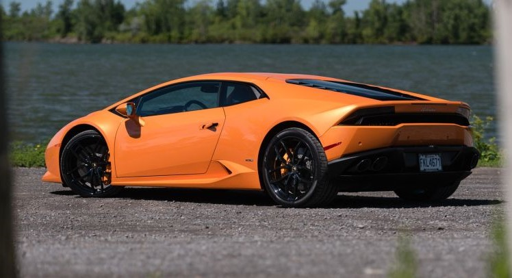

The car’s design is one thing, in fact the thing that sets it apart from the Corollas and Impalas on the road. With that comes much attention, be it good or bad. I went for a stroll in Montreal’s Old Port on a warm Friday evening. The drive along the main road along the water greeted us with many thumbs-up and countless phone pictures.
Moments later, we entered a parking lot, stopped and stationed the car along a pathway with nearby picnic tables. She (the girlfriend, not the Lambo) and I had much to plan for some upcoming work we wanted to do on the house so we parked our butts at a table 10 metres from the car and began our conversation.
In mere minutes, passersby would slow down, stop, stare into the car, do a walk-around and perhaps make approving comments about the orange supercar. Keep in mind that the two of us were slightly removed from the Huracán and given the way we were dressed, there was no way anyone would ever assume that I was holding the keys in my pocket.
Every minute or two, a car, a van full of kids, a group of adults, all would get near the car and soak it in, make comments and take pictures. We noticed many boys running from one end of the park to the car in order to admire what the engineers and designers from Sant’Agata had created.
One pair, a 14-year old and his father, actually had a complete photoshoot with the car, posing as though it was theirs. They even returned 20 minutes later, set up a stand for the camera and carried on with the shoot. This time, the boy leaned against the car, held the door handle but stopped just short of sitting on it. We were also privy to a small group of teenagers who had nothing good to say about the car. They cursed it (its loud colour and shape), as well as called the owners a series of names I won’t repeat here. The contrast was amusing, but not unexpected.

Source/Reference: https://www.auto123.com/en/news/lamborghini-huracan-draws-much-attention/61184/?folder=blogs